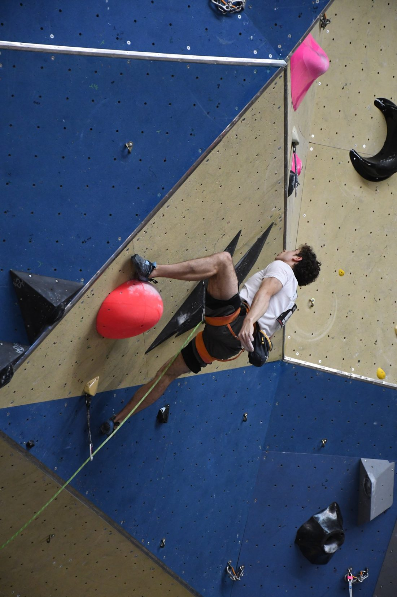
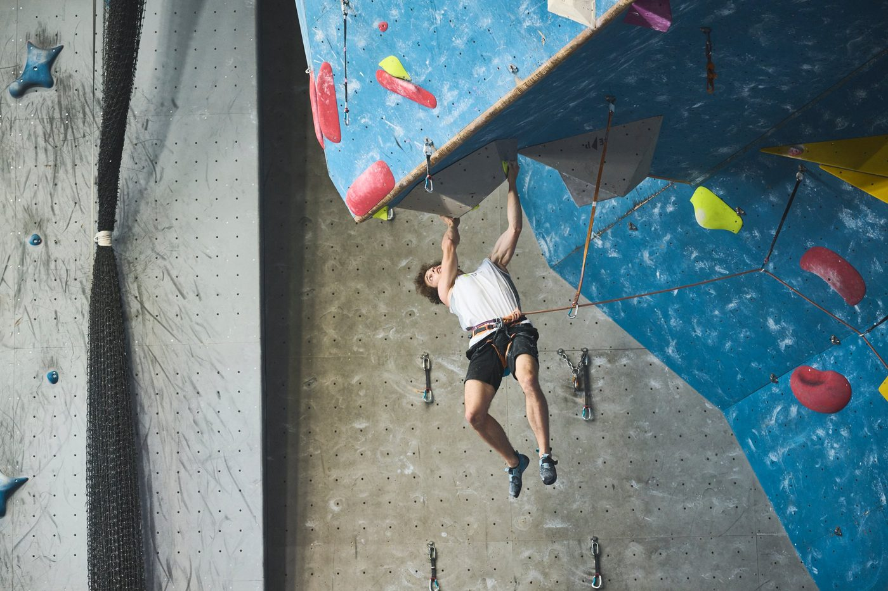

Sport & Activities
Climbing and music have been part of my life for years. They have shaped the way I work: with persistence, focus and curiosity.
A passion since childhood
I started climbing at the age of seven and have never stopped. I enjoy both sides of the sport: outdoor climbing on natural rock, for the adventure and the contact with nature, and indoor competition, where I compete at national level.
Competition has taught me to prepare rigorously, to manage pressure and to read a problem before acting, skills that apply just as well to engineering.
- 9th at the French U20 Championships, Voiron, 2023
- 27th at the French Senior Championships, 2025
- Over 12 years of practice, indoors and outdoors


A music lover and self-taught pianist
Music has a big place in my daily life. I listen to a wide range of styles and enjoy discovering new artists and genres.
This curiosity led me to teach myself the piano. Learning without a teacher meant breaking pieces down, practising regularly and staying motivated on my own, the same autonomy I rely on in my studies.
What music brings me
- Autonomy and self-discipline in learning
- Patience and regular practice
- Open-mindedness through many musical styles
Beyond climbing and music
FPV drone piloting & repair
I fly first-person-view (FPV) drones and repair them myself, from soldering to replacing components. It is a hands-on way to understand electronics, embedded systems and control.
Hiking
Hiking is the natural extension of outdoor climbing: time in the mountains, endurance and a way to disconnect.